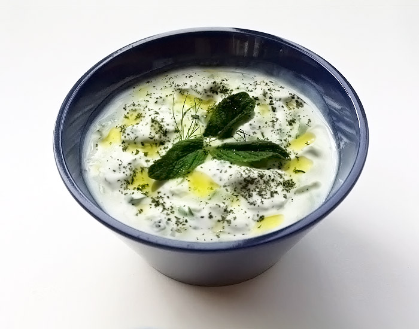

Home >> Turkish Cuisine >> Cacık
The perfect cooling accompaniment to grilled foods and meatballs, cacik (pronounced like "ja-jick") is even better than the Greek tzatziki.
Cacik is a yoghurt and cucumber based meze or side dish. It’s usually flavoured with garlic and dried mint or, less often, dill. You can think of it as a Turkish yoghurt sauce with cucumber.
The dish likely originated from the tarator dishes that became popular across the Ottoman empire, from the Balkans to the Middle East. Originally a simple meze of yoghurt, walnut and vinegar, several variations developed over time.
Cacik, which can also be thought of as a cucumber tarator, is thought to be Turkish in origin. It’s been documented to be in existence as early as the 16th century! At the time, it was likely herbier than most modern versions.
Source: https://vidarbergum.com/recipe/cacik-turkish-tzatziki/